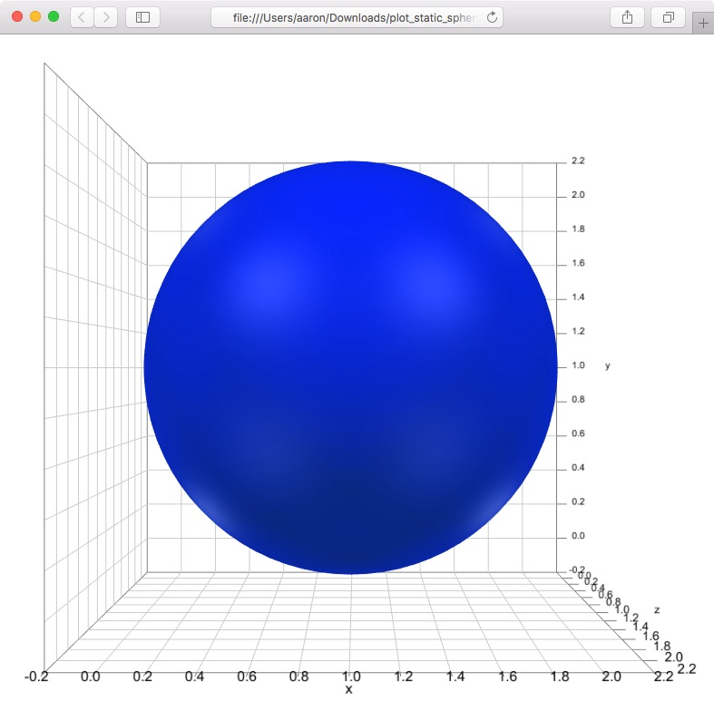

Plotting Spheres
This tutorial will show you how to plot static and animated spheres using the R package svgViewR. This tutorial uses a new WebGL-based plotting mode added in svgViewR 1.3 and implemented using the three.js Javascript library. The uninterrupted block of code can be found at the end of this tutorial.
Preliminary steps
Make sure that you have R installed on your system (you can find R installation instructions here). You will also need to install the latest version of the R package svgViewR on CRAN. This tutorial uses a new plotting mode in svgViewR, webgl, that was added with the 1.3 version, so ensure that you have svgViewR version 1.3 or greater. The webgl currently supports only a few shape types. See the left panel for which shapes can be plotted in svg (old, default) or webgl (new) mode.
# Install the svgViewR package (if not already installed) install.packages('svgViewR', dependencies=TRUE)
Creating a single sphere
Start by loading the svgViewR package into the current R workspace.
# Load the svgViewR package library(svgViewR)
Open a connection to a new svgViewR .html file. All of the shapes that you draw will be written to this .html file. Once you're finished plotting, you'll be able to open this file in a web browser and view the shapes as an interactive visualization. All of the needed code is contained within this html file which will allow you to share this file so others can view the visualization (they do not need to have R installed to view it). Note that mode must be set to webgl to plot spheres; this will eventually become the default mode.
## Create a single static sphere # Open a connection to .html file svg.new(file='plot_static_sphere.html', mode='webgl')
Create a blue sphere centered at {1,1,1}.
# Create sphere svg.sphere(center=c(1,1,1), radius=1, col='blue')
Optionally, add a frame around the sphere. svgViewR will automatically calculate the bounding box around all previously plotted shapes.
# Add a coordinate axis planes around the sphere svg_frame <- svg.frame()
Once you're done plotting, call the svg.close function. This takes all of the shapes saved to an svgViewR environment, writes them to the .html file, and closes the connection.
# Close the file connection svg.close()
You can now open the resulting .html file.
To rotate the graphic left-click and drag the cursor. To move (translate) the graphic right-click and drag the cursor. To zoom scroll in and out. To return to the initial orientation of the graphic (or to see changes if you re-write the file) refresh the browser.
Creating an animated sphere
The sphere can be animated using a set of transformations (rotations and/or translations). These transformations must be specified in the form of transformation matrices. I'll demonstrate this with a set of transformations that rotates the sphere 360 degrees.
Start by setting animation timing parameters. Use n_iter to set the number of iterations (i.e. frames); this will determine how smooth the animation is (more iterations means a smoother animation). Then set times. These are the time points corresponding to each iteration. This determines how quickly the animation plays in realtime (in seconds). To play the animation faster, decrease the maximum time point.
## Creating an animated sphere # Set number of iterations n_iter <- 200 # Set times times <- seq(0, 3, length=n_iter)
Create an array of 4x4 transformation matrices. This array holds a transformation matrix for each iteration.
# Create transformation matrices as an array tmats <- array(diag(4), dim=c(4,4,n_iter))
Fill each of the transformation matrices with the rotation at that iteration. These rotations are specified as a 3x3 matrix (a rotation matrix) in the "top left corner" of each 4x4 transformation matrix. The svgViewR function tMatrixEP_svg is used to create each rotation matrix. The first argument to tMatrixEP_svg is the axis about which the rotation will occur (in this case, the positive y-axis) and the second parameter is the magnitude of rotation about that axis (in radians).
# Get angle at each iteration mags <- head(seq(0, 2*pi, length=n_iter+1), n_iter) # Fill transformation matrices for(i in 1:n_iter) tmats[1:3, 1:3, i] <- tMatrixEP_svg(c(0,1,0), mags[i])
Start a new .html file and add a sphere. Optionally, add a frame around the animated sphere.
# Open a connection to .html file svg.new(file='plot_animated_sphere.html', mode='webgl') # Create sphere svg.sphere(center=c(1,1,1), radius=1, col='blue')
Then, "apply" the transformations to any objects named "sphere". By default, a sphere will be created with the name "sphere". We could also have created a sphere with a different name using the name parameter if we wanted, for example, to animate different spheres using different transformations.
# Apply transformation to all objects named sphere svg.transform(tmarr=tmats, applyto='sphere', time=times)
Optionally, add a frame around the animated sphere.
# Add a coordinate axis planes around the sphere svg_frame <- svg.frame()
Lastly, close the file connection.
# Close the file connection svg.close()
You can now open the resulting .html file.
To start and stop the animation, press the spacebar.
Creating multiple spheres
To create multiple spheres use the svg.spheres function (this is a bit more efficient since svg.sphere creates a custom mesh whereas svg.spheres uses the three.js function THREE.SphereGeometry). Set the number of spheres and use a normal distribution to set randomly distributed centers about {0,0,0}.
## Create multiple spheres # Set number of spheres n_spheres <- 100 # Set centers centers <- matrix(rnorm(n=3*n_spheres), nrow=n_spheres, ncol=3)
Start a new .html file and plot the spheres. I've used a custom name color. This is a second color that enhances the three dimensionality. It looks better with the blue than the default.
# Open a connection to .html file svg.new(file='plot_static_spheres.html', mode='webgl') # Create spheres svg.spheres(x=centers, radius=1, col='blue', emissive=rgb(0.03, 0.15, 0.21))
Optionally, add a coordinate system frame.
# Add a coordinate axis planes around the points svg_frame <- svg.frame()
And close the connection.
# Close the file connection svg.close()
You can now open the resulting .html file. Note that because of WebGL's powerful graphics engine we see the spheres in their stacking order with clean intersections among the various surfaces.

Creating multiple animated spheres
This final section will show you how to create multiple animated spheres and apply a different transformation to each sphere to create a really dynamic animation. Start by setting the timing variables for the animation.
## Create multiple animated spheres # Set number of iterations n_iter <- 100 # Set times in seconds times <- seq(0, 2, length=n_iter)
Then set the number of spheres to plot and set their centers using rnorm.
# Set number of spheres n <- 300 # Set centers centers <- cbind(rnorm(n, sd=1), rnorm(n, sd=1), rnorm(n, sd=1))
It's a bit easier to visualize if each of the spheres has a different color. The following code sets colors for each sphere based on its distance from the origin.
# Get distance of points from the center of point cloud pdist <- sqrt(rowSums((centers - matrix(c(0,0,0), n, 3, byrow=TRUE))^2)) # Set color gradient between red and blue colfunc <- colorRampPalette(c('red', 'blue')) # Set desired number of colors along gradient col_grad <- colfunc(50) # Scale distances to indices and find corresponding color along gradient col <- col_grad[(length(col_grad)-1)*(pdist - min(pdist)) / diff(range(pdist))+1]
To apply a different different transformation to each sphere you'll need a set of transformation matrices for each sphere. To do this create a 4-dimensional transformation array. The third index corresponds to each iteration and the fourth index corresponds to each sphere.
# Create transformation matrices as an array tmats <- array(diag(4), dim=c(4,4,n_iter,n))
The transformation we'll apply here will cause the spheres to accelerate out from the origin and then decelerate toward the end of the animation. To get this acceleration-deceleration effect we can use a sine function to set the magnitude of these translations outward, getting a "ramp up" and a "ramp down".
# Sine smooth function mags <- 15 * (0.5*sin(pi*((0:n_iter)/n_iter) - (pi/2)) + 0.5)
Fill each transformation matrix for each iteration and sphere.
# Fill transformation matrices for(i in 1:n_iter) for(j in 1:n) tmats[1:3, 4, i, j] <- mags[i]*centers[j,]
Now we're ready to plot - open a new .html file.
# Open a connection to .html file svg.new(file='plot_animated_spheres.html', mode='webgl')
With a for-loop, create each sphere, using the name parameter to give each sphere a unique name. Then apply the transformations for that sphere, setting applyto to match the sphere's unique name.
# For each sphere for(i in 1:n){ # Create sphere svg.spheres(x=centers[i,], radius=1, col=col[i], emissive=rgb(0.03, 0.15, 0.21), name=paste0('sphere', i)) # Transform sphere svg.transform(tmarr=tmats[,,,i], applyto=paste0('sphere', i), time=times) }
Add a coordinate frame, if you'd like, and close the connection.
# Add a coordinate axis planes around the points svg_frame <- svg.frame() # Close the file connection svg.close()
Open the resulting .html file to visualize the spheres explode outward!
Uninterrupted code
# Load the svgViewR package library(svgViewR) ## Create a single static sphere # Open a connection to .html file svg.new(file='plot_static_sphere.html', mode='webgl') # Create sphere svg.sphere(center=c(1,1,1), radius=1, col='blue') # Add a coordinate axis planes around the sphere svg_frame <- svg.frame() # Close the file connection svg.close() ## Creating an animated sphere # Set number of iterations n_iter <- 200 # Set times times <- seq(0, 3, length=n_iter) # Create transformation matrices as an array tmats <- array(diag(4), dim=c(4,4,n_iter)) # Get angle at each iteration mags <- head(seq(0, 2*pi, length=n_iter+1), n_iter) # Fill transformation matrices for(i in 1:n_iter) tmats[1:3, 1:3, i] <- tMatrixEP_svg(c(0,1,0), mags[i]) # Open a connection to .html file svg.new(file='plot_animated_sphere.html', mode='webgl') # Create sphere svg.sphere(center=c(1,1,1), radius=1, col='blue') # Apply transformation to all objects named sphere svg.transform(tmarr=tmats, applyto='sphere', time=times) # Add a coordinate axis planes around the sphere svg_frame <- svg.frame() # Close the file connection svg.close() ## Create multiple spheres # Set number of spheres n_spheres <- 100 # Set centers centers <- matrix(rnorm(n=3*n_spheres), nrow=n_spheres, ncol=3) # Open a connection to .html file svg.new(file='plot_static_spheres.html', mode='webgl') # Create spheres svg.spheres(x=centers, radius=1, col='blue', emissive=rgb(0.03, 0.15, 0.21)) # Add a coordinate axis planes around the points svg_frame <- svg.frame() # Close the file connection svg.close() ## Create multiple animated spheres # Set number of iterations n_iter <- 100 # Set times in seconds times <- seq(0, 2, length=n_iter) # Set number of spheres n <- 300 # Set centers centers <- cbind(rnorm(n, sd=1), rnorm(n, sd=1), rnorm(n, sd=1)) # Get distance of points from the center of point cloud pdist <- sqrt(rowSums((centers - matrix(c(0,0,0), n, 3, byrow=TRUE))^2)) # Set color gradient between red and blue colfunc <- colorRampPalette(c('red', 'blue')) # Set desired number of colors along gradient col_grad <- colfunc(50) # Scale distances to indices and find corresponding color along gradient col <- col_grad[(length(col_grad)-1)*(pdist - min(pdist)) / diff(range(pdist))+1] # Create transformation matrices as an array tmats <- array(diag(4), dim=c(4,4,n_iter,n)) # Sine smooth function mags <- 15 * (0.5*sin(pi*((0:n_iter)/n_iter) - (pi/2)) + 0.5) # Fill transformation matrices for(i in 1:n_iter) for(j in 1:n) tmats[1:3, 4, i, j] <- mags[i]*centers[j,] # Open a connection to .html file svg.new(file='plot_animated_spheres.html', mode='webgl') # For each sphere for(i in 1:n){ # Create sphere svg.spheres(x=centers[i,], radius=1, col=col[i], emissive=rgb(0.03, 0.15, 0.21), name=paste0('sphere', i)) # Transform sphere svg.transform(tmarr=tmats[,,,i], applyto=paste0('sphere', i), time=times) } # Add a coordinate axis planes around the points svg_frame <- svg.frame() # Close the file connection svg.close()